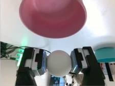
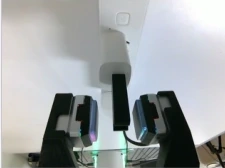
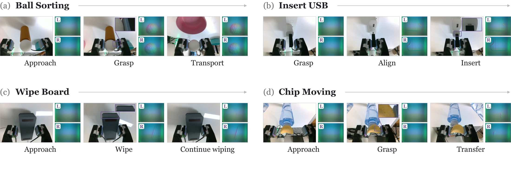
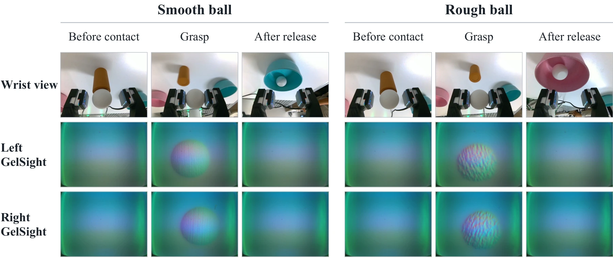

New rollout pendingBall Sorting · Pink bowl
Sort the rough ball by texture.
Distilling Touch into Vision-Only Policies for Contact-Rich Manipulation
A visuotactile teacher guides a visual student through contact-rich manipulation during training. TacitTouch transfers that behavior into the student’s action predictions. The deployed policy uses camera images, robot state and task instructions.
Mean success-rate gain
over vision-only π0.5
TacitTouch performs four contact-rich tasks on the Franka FR3.
Three views of the same autonomous blue-bowl rollout, played at recorded speed.
Teleoperated demonstration frames show the tasks awaiting new autonomous rollout clips.

New rollout pendingSort the rough ball by texture.

New rollout pendingGrasp, align and insert the plug.
 New rollout pending
New rollout pending
Pick up the eraser and clear the marks.
 New rollout pending
New rollout pending
Transfer the chip and release it intact.
Successful evaluation episodes from eight UniVTAC tasks. Open the sensor views to inspect the synchronized cameras and tactile readings.
Wrist RGB and left and right GelSight images, paired in time from teleoperated demonstrations.


The teacher provides action and feature supervision alongside demonstrated actions. At deployment, the student runs on its own.


Selected matched TacImag and TacitTouch rollouts under dimmed inputs and shifted camera viewpoints.

@misc{yang2026tacittouch,
title = {Distilling Touch into Vision-Only Policies for Contact-Rich Manipulation},
author = {Yang, Chen and Wang, Linhao and Shi, Linzhe and Zhang, Guohui and
Wu, Changjie and Zhang, Hang and Li, Haoyu and Xu, Mu and
Fan, Jiansheng and Wang, Chen},
year = {2026},
url = {https://pier-lab.github.io/tacittouch/}
}